Dati e informazione
Contents
4. Dati e informazione#
Vedremo come esistano tipi differenti di dati, e come in funzione del loro tipo esistano diversi strumenti grafici che li descrivono. Studieremo inoltre in modo più approfondito e diversificato il concetto di frequenza.
Come sempre, carichiamo le librerie e il dataset dei supereroi. Già che ci siamo, escludiamo l'unico record che fa riferimento al 2099 come anno di prima apparizione.
import numpy as np
import pandas as pd
import matplotlib.pyplot as plt
from scipy.constants import golden
plt.style.use('sds.mplstyle')
heroes = pd.read_csv('data/heroes.csv', sep=';', index_col=0)
heroes_with_year = heroes[heroes['First appearance'] < 2020]
heroes_with_year.head()
| Identity | Birth place | Publisher | Height | Weight | Gender | First appearance | Eye color | Hair color | Strength | Intelligence | |
|---|---|---|---|---|---|---|---|---|---|---|---|
| Name | |||||||||||
| A-Bomb | Richard Milhouse Jones | Scarsdale, Arizona | Marvel Comics | 203.21 | 441.95 | M | 2008.0 | Yellow | No Hair | 100.0 | moderate |
| Agent Bob | Bob | NaN | Marvel Comics | 178.25 | 81.45 | M | 2007.0 | Brown | Brown | 10.0 | low |
| Abe Sapien | Abraham Sapien | NaN | Dark Horse Comics | 191.24 | 65.35 | M | 1993.0 | Blue | No Hair | 30.0 | high |
| Abin Sur | NaN | Ungara | DC Comics | 185.52 | 90.90 | M | 1959.0 | Blue | No Hair | 90.0 | average |
| Animal Man | Bernhard Baker | NaN | DC Comics | 183.80 | 83.39 | M | 1965.0 | Blue | Blond | 50.0 | average |
4.1. Dati quantitativi e qualitativi#
Una delle principali distinzioni che si possono fare sui dati osservabili riguarda il modo in cui questi sono misurati:
si parla di dati quantitativi se l'esito della misurazione è una quantità numerica;
si parla invece di dati qualitativi (o categorici, o nominali) quando la misurazione è fatta scegliendo un'etichetta a partire da un insieme disponibili.
Pertanto nel nostro dataset i caratteri Height, Weight e Strength saranno da considerare quantitativi, mentre i caratteri Name, Identity, Birth place, Publisher, Gender, Eye color, Hair color e Intelligence saranno sicuramente di tipo qualititativo (la differenza tra Strength e Intelligence è legata al fatto che il primo carattere è misurato tramite numeri che variano tra 0 e 100 mentre il secondo fa riferimento a una scala basata su etichette). La classificazione di First appearance è più sfumata e merita qualche riflessione in più: sebbene l'anno di prima apparizione sia misurato tramite un numero intero, il suo valore non indica prettamente una quantità, bensì quando è accaduto un evento. In tal senso, il calcolo di operazioni aritmetiche quali la somma o la divisione perde di significato, ed è per questo che spesso caratteri di questo tipo ricadono nella classe dei dati qualitativi. Cionondimeno, vedremo come sia possibile ragionare sul carattere First appearance anche in termini quantitativi quando per esempio parleremo della visualizzazione di istogrammi. Ci sono poi casi di caratteri espressi in termini temporali in cui viene misurato il tempo intercorso a partire da un dato istante iniziale (come per esempio il tempo di arrivo del primo cliente in un negozio, misurato in minuti dall'orario di apertura), di cui è chiara l'appartenenza alla classe dei dati quantitativi.
4.1.1. Classificazione dei dati qualitativi#
I dati qualitativi vengono spesso ulteriormente classificati come binari/booleani, nominali oppure ordinali. Si parla di dati binari o booleani quando l'osservazione può avere solo due esiti tra loro non confrontabili (volendo si può parlare di dati booleani per enfatizzare che si sta valutando la presenza o l'assenza di una proprietà, e di dati binari quando esistono due possibili etichette): in tal senso, il carattere Gender, che può assumere solo i valori M e F, è quindi un carattere qualitativo binario. Anche nei dati nominali (detti anche sconnessi), di cui i dati binari rappresentano un caso particolare, i valori osservabili non sono tra loro confrontabili, sebbene non vi sia limite sul numero di diverse etichette. Saranno dunque dati qualitativi nominali, oltre al già considerato Gender, anche Name, Identity, Birth place, Publisher, Gender, Eye color e Hair color. Detto in altri termini, in questo tipo di dati (e quindi anche nel caso binario/booleano) è solo possibile stabilire una relazione di equivalenza tra i valori osservabili: pertanto, due osservazioni potranno avere valori uguali oppure diversi, e nulla più si potrà dire sul loro rapporto. Nei dati ordinali, invece, è possibile stabilire una relazione d'ordine tra i valori osservabili, e quindi quando due valori saranno diversi sarà anche possibile dire quale tra i due sia il più piccolo e quale il più grande. Nel nostro dataset, solo Intelligence è un dato qualitativo ordinale.
4.1.2. Classificazione dei dati quantitativi#
Per quanto riguarda i dati quantitativi, viene spesso fatto riferimento alla differenza tra dati discreti e continui in funzione del tipo di insieme di valori che questi possono assumere. Va in realtà notato che i dati che elaboriamo sono memorizzati su un computer e quindi i valori reali vengono approssimati tramite valori all'interno di un insieme finito (dunque discreto). Vale più la pena ragionare in termini di caratteri per cui ha senso dare significato a un singolo valore (come nel caso dell'anno di prima apparizione, in cui ha senso considerare gli eroi apparsi nel 1970) e di caratteri in cui di norma ha senso considerare un intervallo di valori (come nel caso dei rimanenti caratteri: ha di solito poco senso considerare, per esempio, un eroe alto esattamente 178 centimetri o con un indice di forza pari a 42).
In alcuni casi si considerano diversi i caratteri quantitativi in funzione che abbia o meno senso considerare il rapporto tra i corrispondenti valori: sarebbe questo il caso dei caratteri Height, Weight e Strength nel nostro dataset.
4.2. Frequenze assolute e relative e loro visualizzazione#
Abbiamo già incontrato il concetto di frequenza assoluta: si tratta del
conteggio del numero di volte che una data osservazione occorre in un campione.
Questo tipo di informazione è facilmente analizzabile quando il nuemro di
differenti osservazioni non è troppo grande: ciò accade quasi sempre quando si
analizzano caratteri qualitativi e relativamente meno spesso per i caratteri
quantitativi. Prendiamo per esempio in considerazione il carattere Publisher,
e calcoliamone le frequenze assolute usando il già introdotto metodo
value_counts:
heroes_with_year['Publisher'].value_counts()
Marvel Comics 205
DC Comics 121
Dark Horse Comics 12
George Lucas 11
ABC Studios 4
Image Comics 3
Rebellion 1
Star Trek 1
Universal Studios 1
Hanna-Barbera 1
Name: Publisher, dtype: int64
Vi sono dunque, nel dataset che stiamo analizzando, dieci diversi valori
possibili per l'editore: ciò rende l'insieme delle frequenze assolute
facilmente visualizzabile in forma tabulare, costruendo la cosiddetta tabella
delle frequenze assolute in cui si ha una riga per ogni possibile valore
osservabile, e tale riga contiene il valore stesso e la corrispondente
frequenza assoluta. In senso lato, già l'output di value_counts è una tabella
delle frequenze assolute, anche se è possibile utilizzare la funzione
pd.crosstab per ottenere una visualizzazione più elegante, in quanto tale
funzione restituisce un dataframe:
publisher_freq = pd.crosstab(index=heroes_with_year['Publisher'],
columns=['Abs. freqence'],
colnames=[''])
publisher_freq
| Abs. freqence | |
|---|---|
| Publisher | |
| ABC Studios | 4 |
| DC Comics | 121 |
| Dark Horse Comics | 12 |
| George Lucas | 11 |
| Hanna-Barbera | 1 |
| Image Comics | 3 |
| Marvel Comics | 205 |
| Rebellion | 1 |
| Star Trek | 1 |
| Universal Studios | 1 |
Nomenclatura
L'argomento essenziale di pd.crosstab è, in questo caso, index, che viene
impostato alla serie di cui vanno calcolate le frequenze assolute; i due
rimanenti argomenti influiscono solo sul modo in cui viene visualizzata la
tabella delle frequenze: columns contiene una lista il cui unico elemento è
l'intestazione della colonna delle frequenze, mentre colnames viene impostato
a una lista contenente una stringa vuota al fine di non visualizzare
un'ulteriore etichetta per l'intera tabella.
Essendo l'output di pd.crosstab un dataframe, su esso si possono eseguire
operazioni quali slicing, accesso basato su indice e su posizione e così via.
Ciò permette di trasformare facilmente una tabella di frequenze relative nella
corrispondente tabella delle frequenze relative, dove la frequenza relativa
di un'osservazione è la frazione di casi in quell'osservazione occorre. L'uso
delle frequenze relative permette di valutare più facilmente la grandezza dei
valori in gioco, in quanto questi varieranno sempre tra 0 e 1, mentre le
frequenze assolute non hanno a priori un valore massimo e quindi è meno facile
valutare se una frequenza è «alta» o «bassa». Le frequenze relative si
calcolano dividendo quelle assolute per il numero totale di casi; quest'ultimo
è ovviamente uguale alla somma di tutte le frequenze assolute, quindi la
tabella delle frequenze relative si può ottenere nel modo seguente:
publisher_abs_freq = pd.crosstab(index=heroes_with_year['Publisher'],
columns=['Rel. freqence'],
colnames=[''])
publisher_rel_freq = publisher_abs_freq / publisher_abs_freq.sum()
publisher_rel_freq
| Rel. freqence | |
|---|---|
| Publisher | |
| ABC Studios | 0.011111 |
| DC Comics | 0.336111 |
| Dark Horse Comics | 0.033333 |
| George Lucas | 0.030556 |
| Hanna-Barbera | 0.002778 |
| Image Comics | 0.008333 |
| Marvel Comics | 0.569444 |
| Rebellion | 0.002778 |
| Star Trek | 0.002778 |
| Universal Studios | 0.002778 |
In realtà è possibile creare direttamente la tabella delle frequenze relative
specificando il valore True per l'argomento normalize:
publisher_rel_freq = pd.crosstab(index=heroes_with_year['Publisher'],
columns=['Rel. freqence'],
colnames=[''],
normalize=True)
publisher_rel_freq
| Rel. freqence | |
|---|---|
| Publisher | |
| ABC Studios | 0.011111 |
| DC Comics | 0.336111 |
| Dark Horse Comics | 0.033333 |
| George Lucas | 0.030556 |
| Hanna-Barbera | 0.002778 |
| Image Comics | 0.008333 |
| Marvel Comics | 0.569444 |
| Rebellion | 0.002778 |
| Star Trek | 0.002778 |
| Universal Studios | 0.002778 |
La visualizzazione della tabella può essere migliorata riducendo il numero di
cifre visualizzate, applicando ai suoi elementi la funzione np.round che
arrotonda un valore floating point mantenendo un numero prefissato di cifre
decimali:
publisher_rel_freq.apply(lambda p: 100 * np.round(p, 3))
| Rel. freqence | |
|---|---|
| Publisher | |
| ABC Studios | 1.1 |
| DC Comics | 33.6 |
| Dark Horse Comics | 3.3 |
| George Lucas | 3.1 |
| Hanna-Barbera | 0.3 |
| Image Comics | 0.8 |
| Marvel Comics | 56.9 |
| Rebellion | 0.3 |
| Star Trek | 0.3 |
| Universal Studios | 0.3 |
Volendo visualizzare la frequenza relativa usando delle percentuali è possibile
operare in modo simile: basta moltiplicare per 100 i valori una volta che
questi sono stati arrotondati in modo da tener conto delle cifre decimali che
si vogliono visualizzare. Nella cella seguente il risultato viene convertito in
una serie di stringhe, così da poter effettuare un'ultima trasformazione che
visualizza le percentuali utilizzando il simbolo %.
(publisher_rel_freq.apply(lambda p: np.round(100*p, 2))
.astype(str)
.apply(lambda s: s + '%'))
| Rel. freqence | |
|---|---|
| Publisher | |
| ABC Studios | 1.11% |
| DC Comics | 33.61% |
| Dark Horse Comics | 3.33% |
| George Lucas | 3.06% |
| Hanna-Barbera | 0.28% |
| Image Comics | 0.83% |
| Marvel Comics | 56.94% |
| Rebellion | 0.28% |
| Star Trek | 0.28% |
| Universal Studios | 0.28% |
L'ordine delle righe in una tabella delle frequenze è quello individuato dal suo indice, che tipicamente è legato all'ordinamento predefinito (non decrescente) dei suoi elementi: nel caso di stringhe, quindi, le righe saranno ordinate alfabeticamente per i valori della prima colonna.
gender_freq = pd.crosstab(index=heroes_with_year['Gender'],
columns=['Abs. frequence'],
colnames=[''])
gender_freq
| Abs. frequence | |
|---|---|
| Gender | |
| F | 87 |
| M | 272 |
Volendo modificare tale ordine è possibile accedere al dataframe
corrispondente alla tabella tramite loc e specificando come secondo argomento
una lista dei valori nell'ordine desiderato:
gender_freq.loc[['M', 'F']]
| Abs. frequence | |
|---|---|
| Gender | |
| M | 272 |
| F | 87 |
Abbiamo già visto come utilizzando l'attributo plot di una serie sia
possibile visualizzarne graficamente i contenuti. In particolare, per i dati di
tipo qualitativo è tipicamente sensato utilizzare i grafici a barre:
heroes_with_year['Publisher'].value_counts().plot.bar()
plt.show()
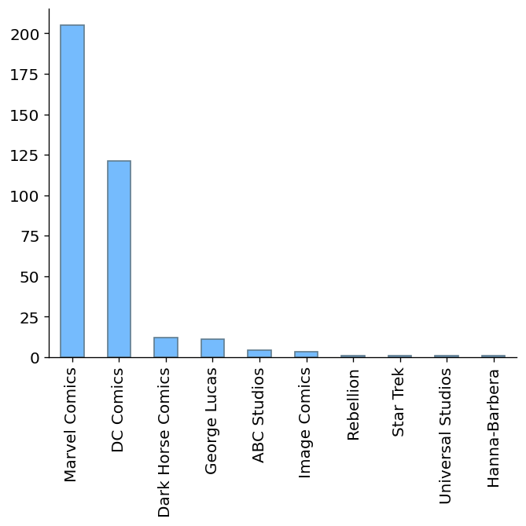
Un grafico analogo si ottiene invocando sempre il metodo plot.bar sul
dataframe corrispondente alla tabella delle frequenze:
publisher_freq.plot.bar()
plt.show()
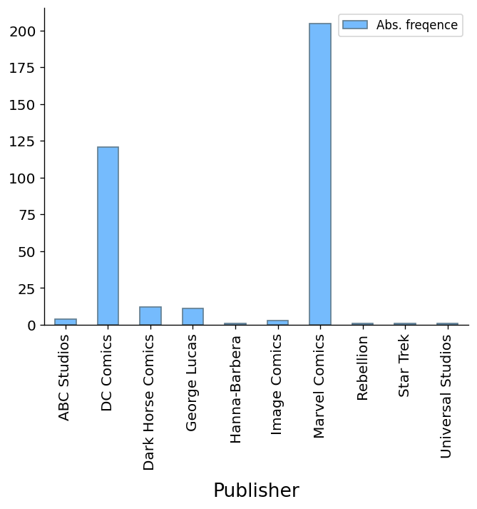
Vi sono due principali differenze tra i grafici a barre ottenuti:
nel primo le barre sono ordinate per frequenza non crescente, mentre nel secondo queste seguono l'ordinamento (in questo caso alfabetico) dei corrispondenti valori;
il secondo grafico contiene una legenda ed etichetta l'asse delle ascisse con il nome del carattere considerato.
Volendo eliminare la legenda è sufficiente rigenerare il grafico specificando
il valore False per l'argomento legend:
publisher_freq.plot.bar(legend=False)
plt.show()
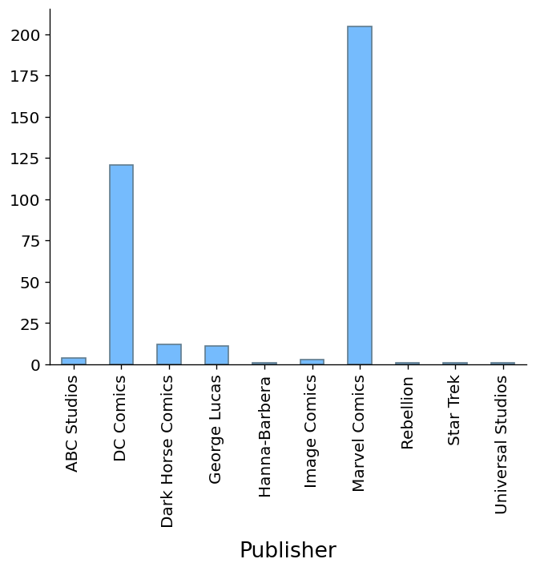
Volendo visualizzare le barre in un ordine differente è sufficiente riordinare
il dataframe nello stesso già visto per le tabelle delle frequenze, prima di
invocare plt.plot.
publisher_order = ['Hanna-Barbera', 'ABC Studios', 'Dark Horse Comics',
'Image Comics', 'Marvel Comics', 'DC Comics',
'George Lucas', 'Rebellion',
'Star Trek', 'Universal Studios']
publisher_rel_freq.loc[publisher_order,:].plot.bar(legend=False)
plt.show()
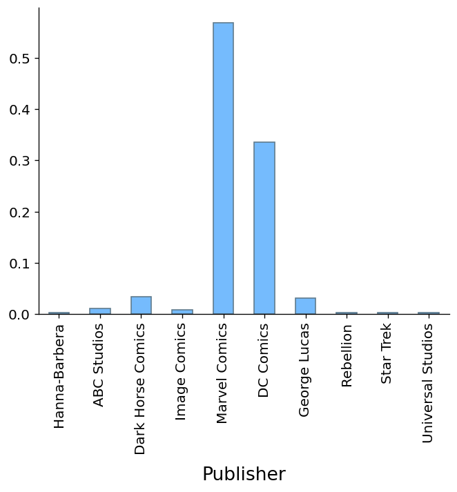
Oltre a modificare l'ordine delle barre, il grafico precedente visualizza le
frequenze relative, ottenute in questo caso facendo riferimento alla tabella
publisher_rel_freq precedentemente generata. Ovviamente il grafico che si
ottiene è analogo a quello delle frequenze assolute: l'unica cosa che cambia è
la scala dei valori sull'asse delle ascisse.
L'uso delle frequenze relative permette anche di confrontare situazioni in cui il numero di osservazioni è variabile. Se per esempio volessimo comparare le frequenze della forza dei supereroi con quelle delle supereroine, ci troveremmo con due diversi numeri di osservazioni:
male_strength_freq = pd.crosstab(index=heroes.loc[heroes['Gender']=='M',
'Strength'],
columns='Abs. freq.')
female_strength_freq = pd.crosstab(index=heroes.loc[heroes['Gender']=='F',
'Strength'],
columns='Abs. freq.')
num_male = sum(male_strength_freq['Abs. freq.'])
num_female = sum(female_strength_freq['Abs. freq.'])
print('Ci sono {} supereroi e {} supereroine'.format(num_male, num_female))
Ci sono 428 supereroi e 164 supereroine
Sovrapporre quindi i grafici a barre delle frequenze assolute non avrebbe
senso, perché le relative altezze non sarebbero confrontabili. Ha invece senso
fare il confronto con le frequenze relative. Già che ci siamo, utilizziamo
l'argomento color per impostare rispettivamente a blu e rosa i colori dei
settori che corrispondono a maschi e femmine (è un po' sessista, ma aiuta a
leggere il grafico a colpo d'occhio).
male_strength_freq = (pd.crosstab(index=heroes.loc[heroes['Gender']=='M',
'Strength'],
columns='Abs. freq.',
normalize=True)
.loc[:, 'Abs. freq.'])
female_strength_freq = (pd.crosstab(index=heroes.loc[heroes['Gender']=='F',
'Strength'],
columns='Abs. freq.',
normalize=True)
.loc[:, 'Abs. freq.'])
male_strength_freq.plot(marker='o', color='blue', legend=False)
female_strength_freq.plot(marker='o', color='pink', legend=False)
plt.show()
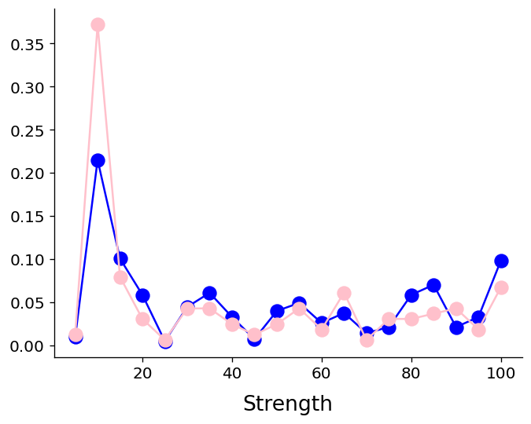
Nomenclatura
Se siete stati attenti avrete notato che le tabelle delle frequenze sono state
accedute tramite loc al fine di estrarre le corrispondenti serie. Ciò è
dovuto al fatto che in caso contrario matplotlib avrebbe prodotto due grafici
separati. Quando più avanti parleremo delle frequenze congiunte vedremo un modo
semplice per generare un'unica figura contenente i due grafici a barre.
In effetti la cella precedente non genera un vero e proprio grafico a barre, perché per ogni valore della forza ci sarebbero due barre, relative ai due generi. Tali barre si sovrapporrebbero, con l'effetto di nascondere (parzialmente o totalmente) quella più bassa.
male_strength_freq.plot.bar(color='blue', legend=False)
female_strength_freq.plot.bar(color='pink', legend=False)
plt.show()
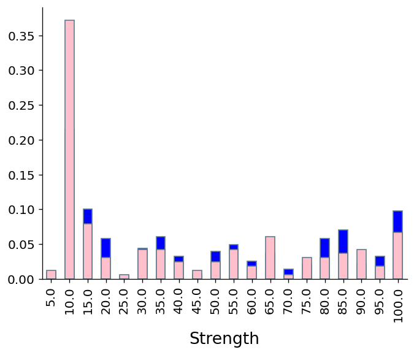
Un'alternativa è quella di specificare il parametro alpha nelle funzioni che
generano i grafici: ciò permette di disegnare delle barre semi-trasparenti che
evidenziano le loro sovrapposizioni.
male_strength_freq.plot.bar(color='blue', alpha=.7)
female_strength_freq.plot.bar(color='pink', alpha=.7)
plt.show()
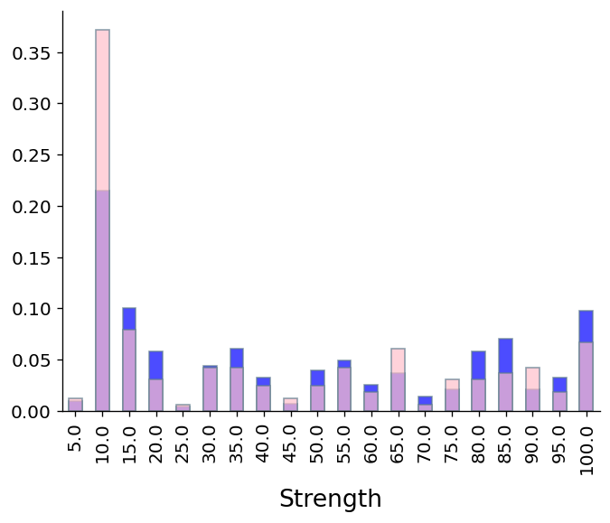
Una modalità alternativa per visualizzare le frequenze in caso di valori
qualitativi, evidenziando inoltre le frazioni rispetto al numero totale dei
casi è quella di utilizzare il metodo pie per produrre un diagramma a torta,
o più tecnicamente un aerogramma, in cui un cerchio è diviso in tanti settori
le cui aree sono proporzionali alle frequenze (pertanto il grafico ottenuto
sarà indipendente dall'avere considerato le frequenze assolute oppure quelle
relative). Per esempio, la cella seguente calcola il diagramma a torta delle
frequenze relative al genere dei supereroi.
gender_freq.plot.pie(y='Abs. frequence', colors=['pink', 'blue'])
plt.show()
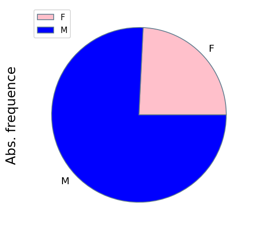
Ci sono alcune cose che vale la pena sottolineare, e che sono descritte di seguito.
A differenza dei grafici generati fino a ora, qui è stato necessario specificare il nome della colonna nel dataframe corrispondente alla tabella delle frequenze. Ciò è legato al fatto che mentre metodi come
plot.barsono in grado di visualizzare più caratteri contemporaneamente (e più avanti vedremo come), quando si disegna un diagrama a torta è necessario utilizzare un solo carattere e quindi è necessario selezionarlo nel dataframe, anche in casi come questo in cui vi è effettivamente un solo carattere; In alternativa, è possibile estrarre la serie dal dataframe e invocare su di essaplot.pie: in altre parole l'istruzione seguente avrebbe generato un grafico analogo:
gender_freq['Abs. frequence'].plot.pie(colors=['pink', 'blue'])
Mentre quando si crea un grafico a barre per un carattere ha ampiamente senso utilizzare lo stesso colore per tutte le barre, nel caso di un diagramma a torta tale scelta renderebbe il risultato illeggibile, ed è per questo che se si vogliono personalizzare i colori è necessario passare la lista dei corrispondenti nomi all'argomento
colors(che è diverso dall'argomentocolorfinora utilizzato).
Nomenclatura
Se ottenete un grafico che contiene un'ellissi al posto di un cerchio,
probabilmente state utilizzando una versione precedente di pandas, che prevede
che le lunghezze sugli assi cartesiani nei grafici siano sempre misurate con
unità di misura diverse. Il rapporto tra queste unità di misura è legato alla
sezione aurea, e ciò ha di norma l'effetto di produrre grafici gradevoli da
vedere, a parte casi come questo in cui i cerchi risultano "schiacciati". Per
ovviare all'inconveniente basta invocare la funzione plt.axis specificando
come argomento 'equal'.
Consideriamo il caso particolare dell'anno di apparizione: se ne tracciamo il grafico a barre delle frequenze assolute, è appropriato posizionare le barre rispettando la relazione di ordine esistente tra i dati, utilizzando direttamente matplotlib come abbiamo visto nella lezione precedente.
first_app_freq = heroes_with_year['First appearance'].value_counts()
plt.bar(first_app_freq.index, first_app_freq.values)
plt.show()
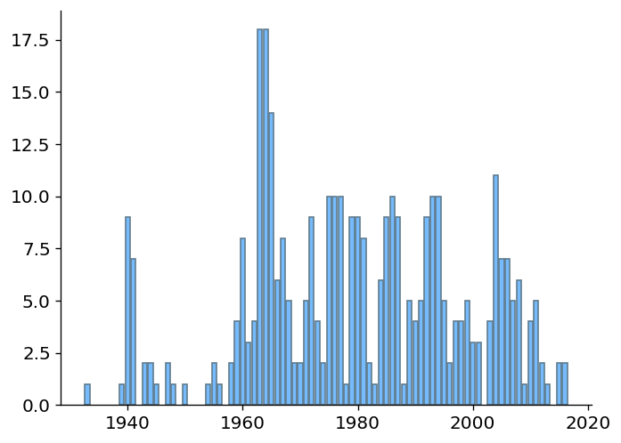
Il risultato non è però ottimale perché le barre hanno uno spessore (sebbene in questo caso sia molto piccolo, a causa dell'elevato numero di barre) che può suggerire un'interpretazione fuorviante del grafico, secondo cui le frequenze non facciano riferimento a un anno, bensì a un in intervallo temporale centrato in un anno. Per evitare tale fraintendimento è più appropriato in casi come questo produrre un grafico a bastoncini in cui ogni punto è evidenziato, piuttosto che da una barra, da un segmento verticale che lo congiunge con l'asse delle ascisse (cosa che, peraltro, permette di non scambiare per nulle le frequenze relativamente basse):
plt.vlines(first_app_freq.index, 0, first_app_freq.values)
plt.show()
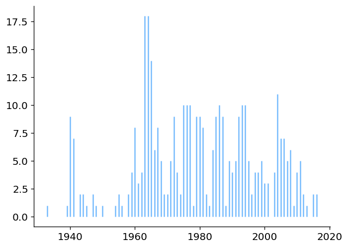
È anche possibile abbinare ogni segmento a un cerchio centrato sul punto che identifica un valore e la sua frequenza: basta generare il grafico precedente e sovrapporgli i singoli punti.
plt.vlines(first_app_freq.index, 0, first_app_freq.values)
plt.plot(first_app_freq.index, first_app_freq.values, 'o')
plt.show()
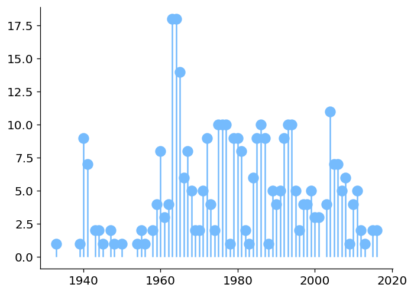
Infine, consideriamo il diagramma a bastoncini relativo al peso dei supereroi.
weight_freq = heroes['Weight'].value_counts()
plt.vlines(weight_freq.index, 0, weight_freq.values)
plt.plot(weight_freq.index, weight_freq.values, 'o')
plt.show()
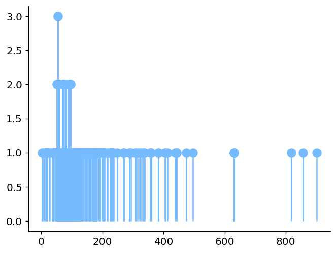
Due pesi, per dire, di 81.12 Kg e di 81.14 Kg vengono considerati in questo
grafico come due valori differenti, ed è per questo che vi sono quasi
esclusivamente bastoncini di altezza unitaria: quasi tutti i valori occorrono
praticamente un'unica volta nel dataset. Ciò è dovuto al fatto che il peso è un
dato quantitativo per cui non ha di norma senso considerare un singolo valore,
e risulta più sensato calcolare le frequenze di intervalli di possibili
valori osservabili. Il grafico corrispondente prende il nome di istogramma, e
viene calcolato e visualizzato in pandas invocando il metodo hist sulla serie
corrispondente:
heroes['Weight'].hist()
plt.show()
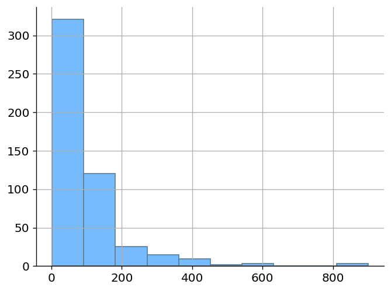
Ovviamente il risultato ottenuto dipende da come sono stati scelti gli
intervalli su cui calcolare le frequenze. Di norma si divide l'intervallo che
contiene tutti i dati osservati in sotto-intervalli equiampi, il cui numero è
individuato dall'argomento bins.
heroes['Weight'].hist(bins=50)
plt.show()
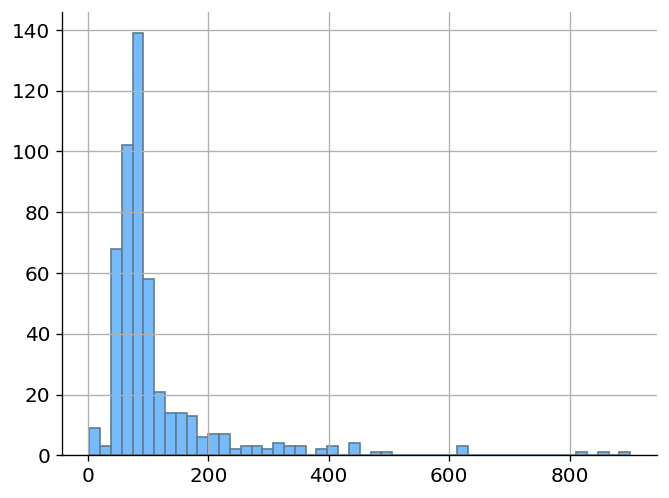
Questo istogramma ci dice, a occhio, che i pesi variano perlopiù tra zero e duecento chilogrammi, sebbene esistano erori con pesi maggiori. In teoria è possibile utilizzare sotto-intervalli di ampiezze differenti: per esempio, ampiezze pari a 20 per i pesi inferiori a 200 kg., pari a 50 per pesi compresi tra 200 e 500 kg., e pari a 100 per i valori rimanenti.
heroes['Weight'].hist(bins=np.hstack((np.arange(0, 200, 20),
np.arange(200, 500, 50),
np.arange(500, 1000, 100))))
plt.show()
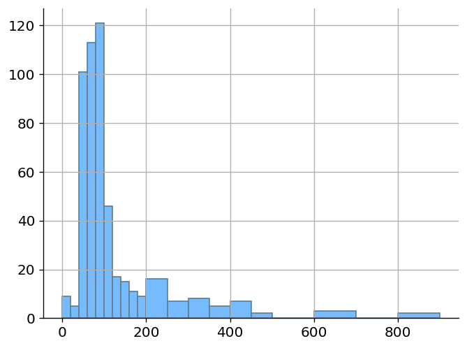
Va notato come in questo caso le altezze delle barre non contino il numero di occorrenze nel corrispondente intervallo: per esempio, vi sono tre pesi superiori a 800 kg., ma la barra corrispondente ha altezza unitaria. Ciò è dovuto al fatto che in un istogramma è l'area di ogni barra a essere legata alla frequenza: se le barre hanno basi della stessa lunghezza, le aree sono proporzionali all'altezza, altrimenti no. È per questo, per esempio, che le due barre più a destra nell'ultimo istogramma hanno altezza unitaria: si riferiscono a tre osservazioni, e la loro area è il triplo dell'area di una barra di altezza unitaria nella parte sinistra del grafico, che invece farebbe riferimento a una sola osservazione.
Nomenclatura
Nella cella precedente sono state utilizzate le funzioni np.hstack, che
permette di giustapporre due o più array numpy, e np.arange, che crea un
array i cui contenuti variano tra i valori indicati dai primi due argomenti,
con incremento pari all'ultimo argomento.
4.3. Frequenze cumulate#
Riconsideriamo l'anno di prima apparizione dei supereroi, e rispondiamo alle domande che seguono.
Qual è il più recente tra gli anni di apparizione di un supereroe?
E qual è il meno recente?
Quanti supereroi hanno un anno di apparizione non superiore al 1970?
Quanti hanno un anno di apparizione successivo al 1980?
Per rispondere alle prime due domande basta selezionare la serie che
orrisponde al carattere first_appearance e calcolarne il minimo e il
massimo valore:
(heroes_with_year['First appearance'].min(), heroes_with_year['First appearance'].max())
(1933.0, 2016.0)
Per rispondere invece alle rimanenti domande potremmo estrarre tramite una
list comprehension tutti gli anni in heroes_with_year che soddisfano i
criteri indicati e calcolarne la lunghezza. Vale però la pena approfittarne per
introdurre un nuovo strumento, che si rivelerà molto versatile: si tratta delle
frequenze cumulate, che si possono calcolare quando esiste una relazione di
ordine per i valori del carattere. Essenzialmente si tratta di considerare i
valori del carattere dal più piccolo al più grande, di calcolare le relative
frequenze e di cumularle in modo che al primo elemento sia associata la sua
frequenza, al secondo la somma delle frequenze dei primi due elementi, al terzo
la somma delle prime tre frequenze e così via.
Per calcolare le frequenze cumulate, pandas mette a disposizione il metodo
cumsum per gli oggetti di tipo serie e dataframe. Quando viene utilizzato
sulla serie prodotta da value_counts è però necessario riordinare le
frequenze prodotte rispetto al loro indice e infine si può invocare il metodo.
Risulta invece più comodo calcolare generare il dataframe corrispondente alla
tabella delle frequenze, che risulta già ordinato nel modo corretto, e su
questo invocare cumsum.
first_app_freq_cumulate = (pd.crosstab(index=heroes_with_year['First appearance'],
columns=['Cumulate freq.'],
colnames=[''])
.cumsum())
first_app_freq_cumulate.iloc[:10] # per brevità visualizziamo solo i primi dieci elementi
| Cumulate freq. | |
|---|---|
| First appearance | |
| 1933.0 | 1 |
| 1939.0 | 2 |
| 1940.0 | 11 |
| 1941.0 | 18 |
| 1943.0 | 20 |
| 1944.0 | 22 |
| 1945.0 | 23 |
| 1947.0 | 25 |
| 1948.0 | 26 |
| 1950.0 | 27 |
Il grafico corrispondente mette in evidenza il fatto che le frequenze cumulate sono monotone crescenti e variano da 0 al numero totale di casi nel dataset considerato:
first_app_freq_cumulate.plot(marker='o', legend=False)
plt.show()
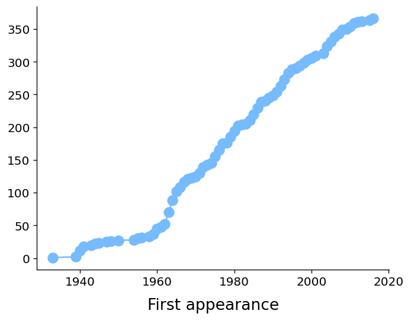
La frequenza cumulata corrispondente a 1970 rappresenta quindi il numero di casi nel dataset in cui l'anno di prima apparizione è minore o uguale al 1970, e dunque tale frequenza rappresenta la risposta alla terza domanda:
first_app_freq_cumulate.at[1970.0, 'Cumulate freq.']
125
Per rispondere all'ultima domanda è possibile procedere in modo analogo: la frequenza cumulata di 1980 corrisponde al numero di casi in cui l'anno di apparizione è minore o uguale a 1980, e sottraendo tale valore al numero totale di casi si ottiene la risposta:
first_app_freq_cumulate.iat[-1, 0] - first_app_freq_cumulate.at[1980.0, 'Cumulate freq.']
172
Va notato come il numero totale di casi corrisponda all'ultima delle frequenze cumulate. Infine, il concetto di frequenze cumulate si può applicare sia alle frequenze assolute, sia a quelle relative: nel secondo caso i valori ottenuti aumenteranno da 0 a 1. Nella cella seguente viene calcolata la tabella delle frequenze relative cumulate per l'anno di prima apparizione di cui, sempre per brevità, vengono mostrate le ultime dieci righe.
first_app_relfreq_cumulate = (pd.crosstab(index=heroes_with_year['First appearance'],
columns=['Cumulate freq.'],
colnames=[''],
normalize=True).cumsum())
first_app_relfreq_cumulate.iloc[-10:]
| Cumulate freq. | |
|---|---|
| First appearance | |
| 2006.0 | 0.923497 |
| 2007.0 | 0.937158 |
| 2008.0 | 0.953552 |
| 2009.0 | 0.956284 |
| 2010.0 | 0.967213 |
| 2011.0 | 0.980874 |
| 2012.0 | 0.986339 |
| 2013.0 | 0.989071 |
| 2015.0 | 0.994536 |
| 2016.0 | 1.000000 |
La visualizzazione in forma grafica delle frequenze relative cumulate equivale a quella precedente: l'unica differenza consiste nei valori sull'asse delle ordinate, che risulteranno ovviamente scalati sull'intervallo \([0, 1]\):
first_app_relfreq_cumulate.plot(legend=False)
plt.show()
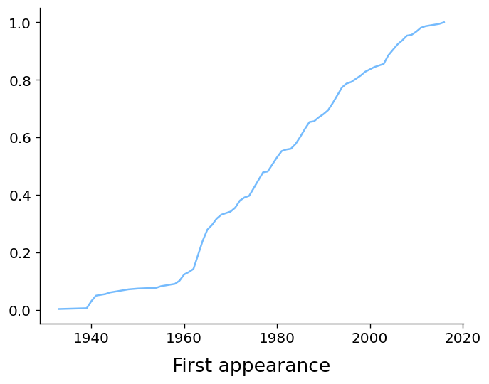
Vale la pena notare come il grafico prodotto sia quello una funzione lineare a tratti: in parole povere, si tratta di una sequenza di segmenti in cui ogni elemento ha l'estremo destro coincidente con quello sinistro del segmento successivo. Possiamo evidenziare questa proprietà effettuando uno zoom, per esempio tra il 1980 e il 1990:
first_app_relfreq_cumulate[1980:1990].plot(legend=False)
plt.show()
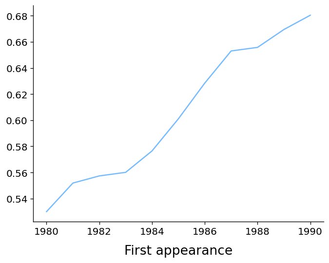
Quando i valori osservati sono di tipo numerico o ordinabile, uno strumento molto simile a quello delle frequenze relative cumulate è rappresentato dalla funzione cumulativa empirica (o funzione di ripartizione empirica), che dato un insieme di osservazioni \(\{ x_1, \dots, x_n \}\), è definita come quella funzione \(\hat F: \mathbb R \mapsto [0, 1]\) tale che per ogni \(x \in \mathbb R\) assume un valore pari alla frequenza relativa delle osservazioni che risultano essere minori o uguali a \(x\). Pertanto
dove \(\mathrm I_A: \mathbb R \mapsto \{0, 1\}\) indica la funzione indicatrice
dell'insieme \(A\), che assume valore nullo in corrispondenza di tutti gli
argomenti che non appartengono ad \(A\) e valore unitario altrimenti, e
\((-\infty, x]\) indica l'intervallo semiaperto identificato da tutti i valori
reali minori o uguali a \(x\). Per un generico argomento \(x\), la funzione
cumulativa empirica assumerà pertanto come valore la frequenza relativa
cumulata del più grande tra i valori osservati \(x_i \leq x\). Dunque il suo
grafico sarà quello di una funzione costante a tratti. In python è presente
un'implementazione della funzione cumulativa empirica nel modulo
statmodels.api: la funzione distributions.ECDF accetta come input un
insieme di osservazioni e restituisce la corrispondente funzione cumulativa
empirica. Possiamo quindi elaborare in tal senso gli anni di prima apparizione
e visualizzare il grafico corrispondente agli anni tra il 1980 e il 1990, così
da poter effettuare un confronto con l'analogo grafico precedentemente
generato:
import statsmodels.api as sm
ecdf = sm.distributions.ECDF(heroes_with_year['First appearance'])
x = np.arange(1980, 1991)
y = ecdf(x)
plt.step(x, y)
plt.show()
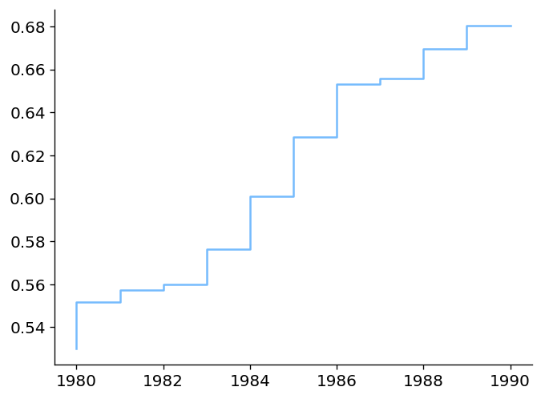
Nomenclatura
In casi come questo è meglio usare plt.step piuttosto che plt.plot,
altrimenti il grafico visualizzato, pur essendo molto simile al risultato
appena ottenuto, non sarebbe tecnicamente parlando quello di una funzione
costante a tratti.
Va peraltro rimarcato che all'aumentare del numero di valori osservabili il
grafico delle frequenze relative cumulate ottenute usando il metodo plot
della corrispondente serie diventa indistinguibile da quello della funzione
cumulativa empirica (sia che si sia utilizzato plt.step, sia che si sia
utilizzato plt.plot per visualizzarlo). Per rendercene conto, possiamo
visualizzare nuovamente la funzione di ripartizione empirica tenendo però
conto di tutte le osservazioni per gli anni di prima apparizione.
min_year = min(heroes_with_year['First appearance'])
max_year = max(heroes_with_year['First appearance'])
x = np.arange(min_year, max_year+1)
y = ecdf(x)
plt.step(x, y)
plt.show()
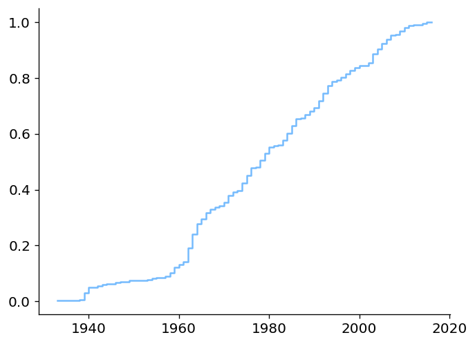
4.3.1. Diagrammi di Pareto#
Frequenze e frequenze cumulate di una variabile categorica possono essere considerate congiuntamente per generare un diagramma di Pareto nel modo seguente: ordinando i dati per frequenza decrescente, su uno stesso sistema di riferimento in cui l'asse delle ascisse fa riferimento ai valori della variabile si sovrappongono il diagramma a barre delle frequenze e una linea spezzata che collega i valori delle frequenze cumulate. Consideriamo per esempio i colori degli occhi più frequenti nel nostro dataset (definiti per comodità come i colori che occorrono con frequenza relativa superiore a 0.02).
eye_color = heroes['Eye color']
eye_color_freq = eye_color.value_counts(normalize=True)
eye_color_freq[eye_color_freq>.02].cumsum().plot()
eye_color_freq[eye_color_freq>.02].plot.bar()
plt.show()

Ovviamente per quanto riguarda il valore più a sinistra nel diagramma (e quindi quello avente la frequenza maggiore) frequenza e frequenza cumulata coincideranno sempre.
Va notato come la linea spezzata nel precedente diagramma non arrivi all'ordinata 1, avendo considerato solo un sottoinsieme dei dati: possiamo verificarlo, oltre che visualmente, sommando le frequenze relative:
sum(eye_color_freq[eye_color_freq>.02])
0.9271758436944938
Se dividiamo tutte le frequenze per la somma ottenuta, apportiamo alle frequenze una correzione che fa sì che ora la loro somma sia esattamente uno (spesso si usa il termine normalizzazione per indicare un'operazione di questo tipo). Il diagramma di Pareto per i valori ottenuti considerando questa correzione si estende ora fino all'ordinata unitaria.
norm_eye_color_freq = eye_color_freq[eye_color_freq>.02]/0.92
norm_eye_color_freq.cumsum().plot()
norm_eye_color_freq.plot.bar()
plt.show()
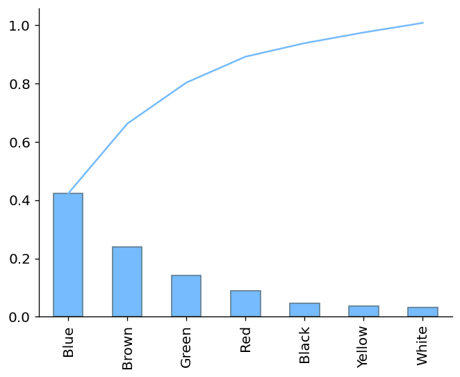
In generale, un diagramma di Pareto permette di identificare gli elementi più
rilevanti in termini di frequenze all'interno di un insieme di osservazioni,
evidenziando simultaneamente il peso di ogni fattore, sia il loro peso
cumulativo. Nel nostro caso, il grafico ottenuto mostra permette per esempio di
verificare a colpo d'occhio come gli occhi blu, marroni e verdi identifichino
l'80% dei supereroi. Va sottolineato però che questo dato numerico è in qualche
modo influenzato dalla scelta di avere escluso tutti i colori con una frequenza
relativa minore di 0.02. Implementiamo una funzione my_pareto che permette di
impostare la soglia sulle frequenze e rigeneriamo il grafico, stavolta
considerando tutti i dati.
def my_pareto(data, threshold=0.02, renormalize=False):
freq = data.value_counts(normalize=True)
freq = freq[freq > threshold]
if renormalize:
freq = freq / sum(freq)
freq.cumsum().plot()
freq.plot.bar()
my_pareto(heroes['Eye color'], threshold=0)
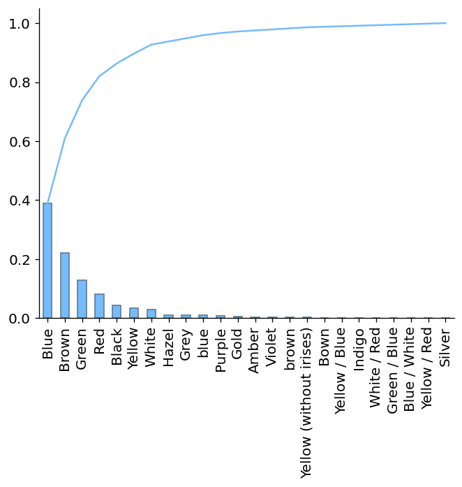
Notate come il grafico ottenuto sia particolarmente poco leggibile, essendo
popolato nella metà destra da colori che, presi singolarmente, hanno una
frequenza non rilevabile nel diagramma a barre. Considerate cumulativamente,
queste frequenze hanno però un effetto sul grafico: in effetti, se vogliamo
considerare l'80% dei dati è necessario includere anche il colore rosso. La
definizione della funzione my_pareto evita in effetti di correggere i dati,
a meno che non venga specificamente indicato tramite l'argomento renormalize,
così da ottenere un grafico più preciso.
my_pareto(heroes['Eye color'], threshold=0.015)
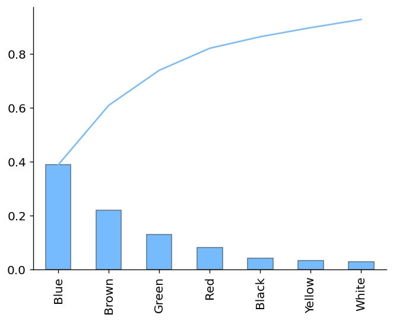
Il corrispondente diagramma di Pareto si può generare manualmente oppure
utilizzando la funzione pareto del package paretochart:
#from paretochart import pareto
eye_color = heroes_with_year['Eye color']
eye_color_freq = eye_color.value_counts(normalize=True)
common_colors = eye_color_freq[eye_color_freq > .02].index
common_color_data = eye_color[eye_color.isin(common_colors)]
#pareto(common_color_data.value_counts(normalize=True),
# labels=common_colors)
#plt.show()
Bisogna sottolineare che il package paretochart è, al momento, non ancora
stato portato alla versione 3 di python. Quindi dopo la sua installazione, da
effettuarsi preferibilmente tramite pip (il package non è attualmente
disponibile in anaconda), è necessario eseguire lo script
$ 2to3 -w *.py
nella directory in cui è stato installato il package (tipicamente, la directory
site-packages/paretochart all'interno della directory in cui risultano
installate le librerie di python).
4.4. Frequenze congiunte e marginali#
Spesso è utile analizzare un insieme di osservazioni prendendo in
considerazione due caratteri al posto di uno, per esempio per vedere se i
valori di tali caratteri tendano a essere più o meno collegati tra loro tramite
una relazione. Il concetto di frequenza si specializza in questo caso andando a
contare il numero di osservazioni in cui i due caratteri considerati assumono
due determinati valori, ottenendo la cosiddetta frequenza congiunta assoluta
(o equivalentemente la frequenza congiunta relativa nel caso in cui si
calcolasse la frazione di osservazioni e non il suo numero). Nel caso in cui i
possibili valori osservabili non siano parecchi, è possibile visualizzare
queste frequenze tramite una tabella delle frequenze congiunte (detta anche
tabella di contingenza), ottenuta estendendo il concetto di tabella delle
frequenze precedentemente introdotto: ora le righe della tabella
corrisponderanno ai possibili valori di uno dei caratteri considerati, le sue
colonne corrisponderanno ai valori del rimanente carattere e gli elementi della
tabella conterranno le frequenze congiunte (assolute o relative). La funzione
pd.crosstab può essere utilizzata anche per produrre questo tipo di tabella:
basta indicare le serie corrispondenti ai caratteri considerati come valori
degli argomenti index e columns.
int_gender_freq = pd.crosstab(index=heroes['Intelligence'],
columns=heroes['Gender'])
int_gender_freq
| Gender | F | M |
|---|---|---|
| Intelligence | ||
| average | 38 | 101 |
| good | 78 | 165 |
| high | 27 | 112 |
| low | 0 | 13 |
| moderate | 21 | 37 |
L'ordine delle righe può essere modificato nello stesso modo visto per le
tabelle delle frequenze: per modificare la tabella in modo che risulti
ordinata per i valori di intelligenza piuttosto che in modo alfabetico sarà
quindi sufficiente utilizzare in metodo reindex.
int_gender_freq = int_gender_freq.reindex(['low', 'moderate',
'average', 'good', 'high'])
int_gender_freq
| Gender | F | M |
|---|---|---|
| Intelligence | ||
| low | 0 | 13 |
| moderate | 21 | 37 |
| average | 38 | 101 |
| good | 78 | 165 |
| high | 27 | 112 |
Siccome crosstab produce dei dataframe, per riordinare le colonne è
sufficiente accedere alla tabella tramite loc e specificando come secondo
argomento una lista dei valori nell'ordine desiderato:
int_gender_freq.loc[:,['M', 'F']]
| Gender | M | F |
|---|---|---|
| Intelligence | ||
| low | 13 | 0 |
| moderate | 37 | 21 |
| average | 101 | 38 |
| good | 165 | 78 |
| high | 112 | 27 |
In modo analogo è possibile visualizzare solo alcune righe oppure solo alcune colonne della tabella, come nella cella seguente:
int_gender_freq.loc['moderate':'good', :]
| Gender | F | M |
|---|---|---|
| Intelligence | ||
| moderate | 21 | 37 |
| average | 38 | 101 |
| good | 78 | 165 |
Nomenclatura
Va notato che quella appena ottenuta non è più una tabella delle frequenze, in quanto non fa riferimento a tutti i possibili valori in gioco.
Sempre ipotizzando che il numero di valori osservabili non sia troppo elevato, la visualizzazione grafica delle frequenze congiunte può essere effettuata estendendo il concetto di diagramma a barre in modo che visualizzi due caratteri al posto di uno, raggruppando le barre che fanno riferimento a uno stesso valore per uno dei caratteri, e colorandole in funzione del valore che queste assumono per l'altro carattere in gioco. Il posizionamento delle barre viene normalmente fatto in due possibili modi:
invocando il metodo
plot.barinvocato sulla tabella, in modo che le barre relative a uno stesso valore risultino affiancate
int_gender_freq.plot.bar(color=['pink', 'blue'])
plt.show()
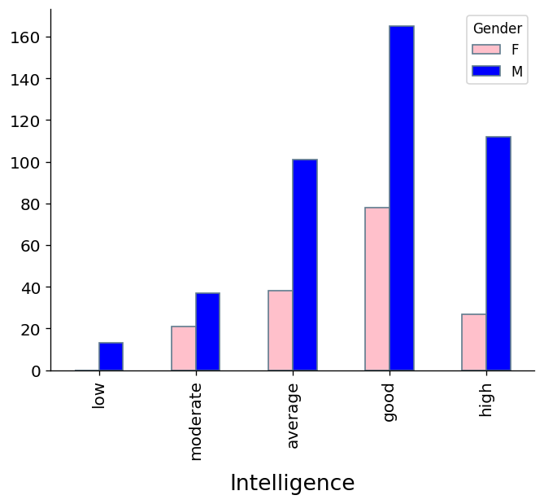
specificando ulteriormente il valore
Trueper l'argomentostacked, in modo da sovrapporre le barre che si riferiscono a uno stesso valore:
int_gender_freq.plot.bar(color=['pink', 'blue'], stacked=True)
plt.show()
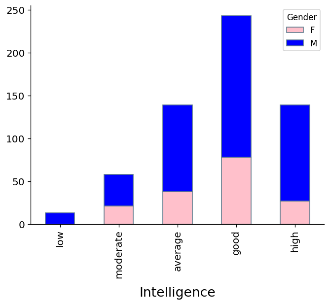
Nel caso in cui si volessero calcolare le frequenze congiunte e almeno uno dei caratteri fosse numerico, si rischierebbe di ricadere nello stesso problema descritto quando abbiamo parlato degli istogrammi: si consideri per esempio il tentativo di calcolare le frequenze congiunte di peso e genere:
pd.crosstab(index=heroes['Weight'], columns=[heroes['Gender']]).iloc[:10,:]
| Gender | F | M |
|---|---|---|
| Weight | ||
| 2.34 | 0 | 1 |
| 4.82 | 0 | 1 |
| 9.79 | 0 | 1 |
| 14.67 | 0 | 1 |
| 16.20 | 0 | 1 |
| 17.01 | 0 | 1 |
| 18.11 | 0 | 1 |
| 18.45 | 0 | 1 |
| 19.00 | 0 | 1 |
| 25.73 | 0 | 1 |
Essenzialmente in ogni riga c'è un valore nullo e uno unitario, semplicemente
perché succede quasi sempre che un particolare valore del peso specificato fino
ai decigrammi occorra un'unica volta nelle osservazioni. È quindi opportuno
raggruppare assieme pesi «vicini» tra loro. Ciò viene fatto utilizzando la
funzione pd.cut, che converte una serie di valori numerici in una serie
qualitativa i cui valori possibili sono gli intervalli di una partizione aventi
per estremi i valori specificati in corrispondenza dell'argomento bins.
Considerando questa nuova serie è possibile generare una tabella di frequenze
congiunte più significativa.
pd.crosstab(index=pd.cut(heroes['Weight'],
bins=[30, 50, 80, 100, 200, 500, 1000]),
columns=[heroes['Gender']])
| Gender | F | M |
|---|---|---|
| Weight | ||
| (30, 50] | 4 | 4 |
| (50, 80] | 116 | 88 |
| (80, 100] | 5 | 111 |
| (100, 200] | 11 | 84 |
| (200, 500] | 5 | 38 |
| (500, 1000] | 1 | 5 |
Le impostazioni predefinite di pd.cut fanno riferimento a intervalli aperti a
sinistra e chiusi a destra, ma è possibile invertire l'apertura e la chiusura
degli estremi utilizzando l'argomento opzionale right:
pd.crosstab(index=pd.cut(heroes['Weight'],
bins=[30, 50, 80, 100, 200, 500, 1000],
right=False),
columns=[heroes['Gender']])
| Gender | F | M |
|---|---|---|
| Weight | ||
| [30, 50) | 4 | 4 |
| [50, 80) | 116 | 88 |
| [80, 100) | 5 | 111 |
| [100, 200) | 11 | 84 |
| [200, 500) | 5 | 38 |
| [500, 1000) | 1 | 5 |
Quando si genera una tabella di frequenze congiunte, è possibile specificare il
valore True per l'argomento margins al fine di aggiungere una riga e una
colonna che contengono i totali (calcolati rispettivamente sulle singole
colonne e sulle singole righe). I valori ivi indicati prendono il nome di
frequenze marginali, e corrispondono alle frequenze del carattere
corrispondente. Per esempio, rigenerando la tabella delle frequenze congiunte
di livello di intelligenza e genere con le colonne dei totali,
pd.crosstab(index=heroes['Intelligence'],
columns=heroes['Gender'], margins=True)
| Gender | F | M | All |
|---|---|---|---|
| Intelligence | |||
| average | 38 | 101 | 139 |
| good | 78 | 165 | 243 |
| high | 27 | 112 | 139 |
| low | 0 | 13 | 13 |
| moderate | 21 | 37 | 58 |
| All | 164 | 428 | 592 |
la colonna All conterrà le frequenze assolute per il carattere Intelligence,
e parimenti la righa All elencherà le frequenze assolute per il genere
(escludendo ovviamente in entrambi i casi l'ultimo elemento che corrisponde al
numero totale di osservazioni).
Le frequenze congiunte a cui abbiamo fatto riferimento negli esempi visti
finora erano frequenze assolute, ma è immediato estendere tale concetto a
quello delle frequenze congiunte relative. Queste si possono calcolare
dividendo le frequenze assolute per il numero totale di osservazioni, oppure
utilizzando come in precedenza il parametro normalize in pd.crosstab, che
però ora ha diversi valori possibili:
specificando
'all'vengono effettivamente calcolate le frequenze relative
pd.crosstab(index=heroes['Intelligence'],
columns=heroes['Gender'],
margins=True,
normalize='all')
| Gender | F | M | All |
|---|---|---|---|
| Intelligence | |||
| average | 0.064189 | 0.170608 | 0.234797 |
| good | 0.131757 | 0.278716 | 0.410473 |
| high | 0.045608 | 0.189189 | 0.234797 |
| low | 0.000000 | 0.021959 | 0.021959 |
| moderate | 0.035473 | 0.062500 | 0.097973 |
| All | 0.277027 | 0.722973 | 1.000000 |
usando
'index'si otterrà una tabella in cui i valori su ogni riga sommano a 1
pd.crosstab(index=heroes['Intelligence'],
columns=heroes['Gender'],
margins=True,
normalize='index')
| Gender | F | M |
|---|---|---|
| Intelligence | ||
| average | 0.273381 | 0.726619 |
| good | 0.320988 | 0.679012 |
| high | 0.194245 | 0.805755 |
| low | 0.000000 | 1.000000 |
| moderate | 0.362069 | 0.637931 |
| All | 0.277027 | 0.722973 |
indicando invece
columnsviene generata una tabella in cui tutte le colonne sommano al valore unitario
pd.crosstab(index=heroes['Intelligence'],
columns=heroes['Gender'],
margins=True,
normalize='columns')
| Gender | F | M | All |
|---|---|---|---|
| Intelligence | |||
| average | 0.231707 | 0.235981 | 0.234797 |
| good | 0.475610 | 0.385514 | 0.410473 |
| high | 0.164634 | 0.261682 | 0.234797 |
| low | 0.000000 | 0.030374 | 0.021959 |
| moderate | 0.128049 | 0.086449 | 0.097973 |
La normalizzazione per colonne permette di ottenere una tabella che contiene le
frequenze relative di due sotto-popolazioni come nel caso precedentemente
visto, relativo alla forza di supereroi e supereroine. Invocando plot o
plot.bar su questa tabella si ottiene in modo semplice un grafico che
permette di confrontare visualmente tali frequenze.
pd.crosstab(index=heroes['Strength'],
columns=[heroes['Gender']],
normalize='columns').plot.bar(color=['pink', 'blue'],
stacked=False)
plt.show()
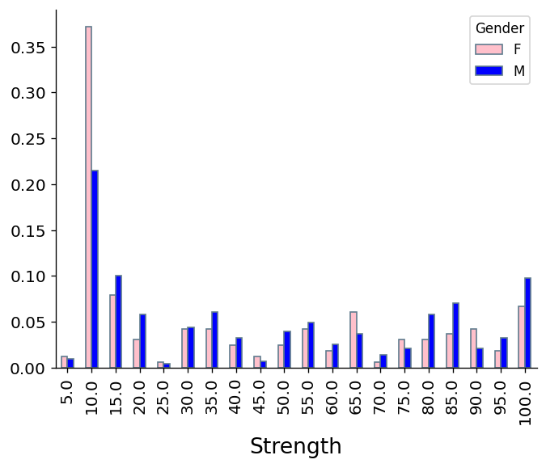
Abbiamo visto in una lezione precedente come generare direttamente un grafico
di una serie senza elaborarla (calcolando per esempio le sue frequenze) produce
un risultato che non è normalmente informativo. Le cose sono diverse quando si
considerano congiuntamente due serie con un medesimo indice: in tal caso per
ogni elemento di questo indice (e dunque per ogni osservazione), i valori delle
due serie possono essere utilizzati per individuare le coordinate di un punto
nel piano. Visualizzando i punti corrispondenti a tutte le osservazioni si
ottiene un diagramma di dispersione (o scatter plot). In pandas questo tipo
di grafico si genera invocando il metodo plot.scatter sul dataframe che
contiene le osservazioni, indicando come argomenti i nomi dei caratteri che
devono essere considerati (il primo dei quali verrà visualizzato sull'asse
delle ascisse, usando invece quello delle ordinate per il secondo). Per esempio
nella cella seguente viene visualizzato il diagramma di dispersione dei
caratteri relativi ad altezza e peso dei supereroi di genere maschile.
heroes[heroes['Gender']=='M'].plot.scatter('Height', 'Weight')
plt.show()
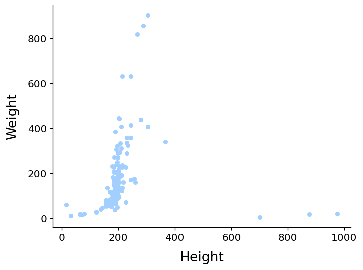
I diagrammi di dispersione permettono di valutare visivamente se esistano delle relazioni che legano i due caratteri visualizzati. Per esempio nel grafico precedente si nota come tendenzialmente a un valore alto del peso corrisponda un valore alto per l'altezza e viceversa. Volendo è possibile aggiungere al grafico una retta che metta in evidenza tale tipo di relazione:
heroes[heroes['Gender']=='M'].plot.scatter('Height', 'Weight')
trend = lambda x: -1200 + x * 7
x_range = [170, 300]
line, = plt.plot(x_range, list(map(trend, x_range)), color='black')
line.set_dashes([3, 2])
line.set_linewidth(2)
plt.show()
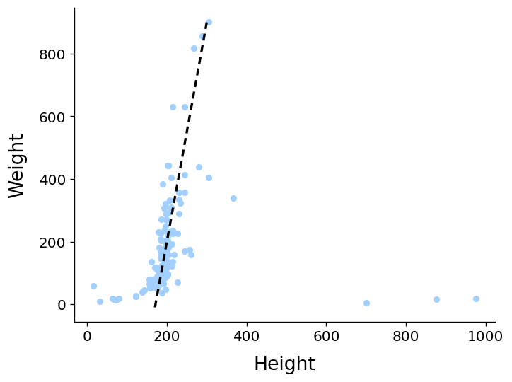
In questo caso la retta è stata posizionata «a mano»: esistono metodi che ci
permettono di determinarla in funzione delle osservazioni. Per il momento
mettiamo in evidenza la possibilità di definire in modo formale una retta
scelta in modo da minimizzare una sua distanza da tutti i punti, utilizzando
il cosiddetto metodo dei minimi quadrati. La cella seguente mostra come
determinare tale retta, avendo cura di lavorare su una copia del dataframe
sulla quale invocare il metodo dropna che elimina le righe in cui è presente
almeno un valore mancante.
from sklearn import linear_model
regr = linear_model.LinearRegression()
heroes_with_data = heroes[heroes['Gender']=='M'].copy().dropna()
X = heroes_with_data.loc[:, ['Height']]
Y = heroes_with_data['Weight']
regr.fit(X, Y)
heroes[heroes['Gender']=='M'].plot.scatter('Height', 'Weight')
line, = plt.plot([0, 1000], regr.predict([[0], [1000]]), color='black')
line.set_dashes([3, 2])
line.set_linewidth(2)
plt.show()
/opt/hostedtoolcache/Python/3.8.15/x64/lib/python3.8/site-packages/sklearn/base.py:409: UserWarning: X does not have valid feature names, but LinearRegression was fitted with feature names
warnings.warn(
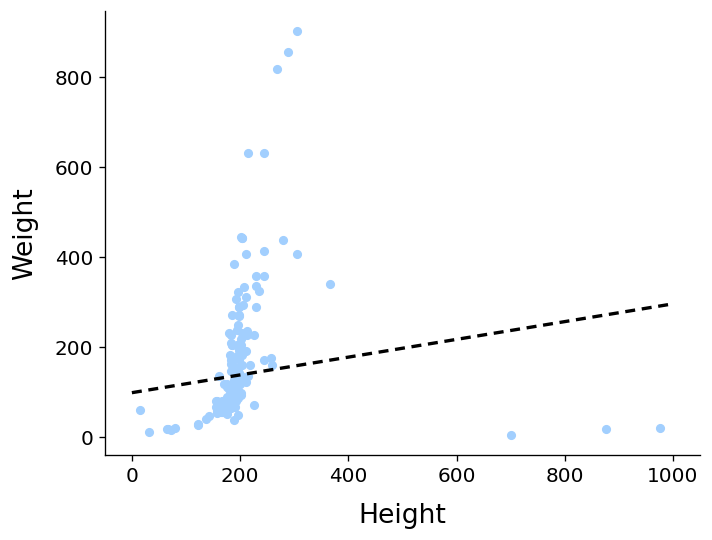
Anche in questo caso si rimanda alla documentazione ufficiale per gli approfondimenti del caso. Notiamo solo come la presenza dei tre valori estremi nella parte destra del grafico fa sì che la retta ottenuta sia sensibilmente diversa rispetto a quella tracciata a mano. Le cose cambiano se non si considerano questi tre valori.
heroes_with_data = heroes_with_data[heroes_with_data['Height']<300]
X = heroes_with_data.loc[:, ['Height']]
Y = heroes_with_data['Weight']
regr.fit(X, Y)
heroes[heroes['Gender']=='M'].plot.scatter('Height', 'Weight')
line, = plt.plot([150, 350], regr.predict([[150], [350]]), color='black')
line.set_dashes([3, 2])
line.set_linewidth(2)
plt.show()
/opt/hostedtoolcache/Python/3.8.15/x64/lib/python3.8/site-packages/sklearn/base.py:409: UserWarning: X does not have valid feature names, but LinearRegression was fitted with feature names
warnings.warn(
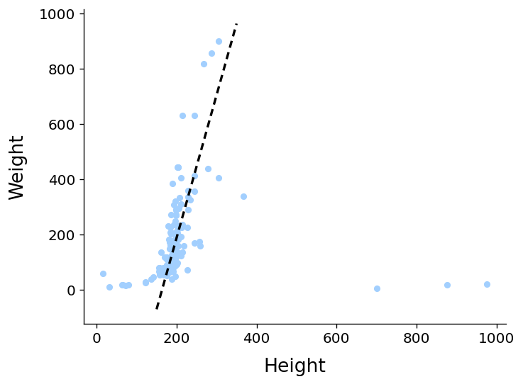
Va infine notato che le relazioni tra due caratteri non necessariamente hanno una forma lineare, ma approfondire questo aspetto esula dal carattere introduttivo di questo corso.
male_heroes = heroes_with_data[heroes_with_data['Gender']=='M']
male_heroes['Height'].cov(male_heroes['Weight'])
1817.2108845049506
male_heroes['Height'].corr(male_heroes['Weight'])
0.8268581935167995
4.5. Alcuni approfondimenti sulla generazione dei grafici *#
Nomenclatura
I paragrafi contrassegnati con un asterisco sono opzionali. È dunque possibile saltarli a meno che non si voglia approfondire gli argomenti ivi contenuti.
Una cella grafica generata da matplotlib e visualizzata nel notebook contiene
quella che viene definita una figura (tecnicamente, un oggetto della classe
plt.Figure). Ogni figura può contenere uno o più sistemi cartesiani
(oggetti della classe plt.Axes) i quali a loro volta contengono (nella
maggior parte dei casi) due assi cartesiani (oggetti della classe plt.Axis,
da non confondere con plt.Axes). Tutte le figure che abbiamo generato finora
contenevano un unico sistema di assi cartesiani, su cui venivano eventualmente
sovrapposti tutti i grafici che venivano creati. È però possibile ottenere
figure in cui più sistemi cartesiani vengono affiancati su una griglia
bidimensionale. Ciò permette per esempio di affiancare grafici diversi. La
gestione di tale griglia è di norma demandata alla funzione plt.subplot, che
accetta tre argomenti interi: i primi due indicano rispettivamente il numero di
righe e di colonne nella griglia, e il terzo specifica una posizione nella
griglia stessa (con la convenzione che in una griglia di \(n\) colonne 1 indica
la posizione nella prima riga e nella prima colonna, 2 quella nella prima riga
e nella seconda colonna e così via fino a \(n\) che indica l'ultima posizione
nella prima riga; procedendo oltre si passa alla riga successiva, così che
\(n+1\) individua la seconda riga e la prima colonna e via discorrendo. Una volta
che plt.subplot è stato invocato, questo restituisce l'oggetto corrispondente
al sistema cartesiano relativo, che conterrà (eventualmente sovrapponendoli)
tutti i grafici generati fino alla successiva invocazione di plt.subplot.
Questo è quello che succede per esempio quando si invocano i metodi di plot
su una serie: nella cella seguente per esempio vengono affiancati i diagrammi a
torta relativi alle frequenze di genere e livello di intelligenza.
plt.figure(figsize=(6, 3))
plt.subplot(1, 2, 1)
gender_freq['Abs. frequence'].plot.pie(colors=['pink', 'blue'])
plt.ylabel('')
plt.xlabel('Gender')
plt.subplot(1, 2, 2)
heroes['Intelligence'].value_counts().plot.pie()
plt.ylabel('')
plt.xlabel('Intelligence')
plt.show()
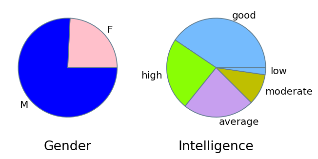
Va notato che in questo caso l'invocazione di plt.axis('equal') non
sortirebbe l'effetto desiderato di mostrare due cerchi, in quanto il metodo
agisce sulla figura e non sui suoi assi. È quindi necessario impostare
manualmente la dimensione della figura in modo che la base sia pari al doppio
dell'altezza, così che entrambi i sistemi cartesiani risultino nei fatti essere
dei quadrati. Ciò viene fatto grazie all'invocazione preliminare di
plt.figure, che crea una figura di dimensioni specifiche piuttosto che
ottenere una figura predefinita.
Nomenclatura
Nella cella precedente va notata anche l'invocazione di plt.xlabel e
plt.ylabel che spostano la descrizione dei diagrammi dall'asse delle ordinate
a quello delle ascisse (per aumentare la leggibilità), inserendo nel contempo
delle descrizioni più informative.
Vi sono però alcuni casi in cui la generazione di un grafico implica la
creazione di un nuovo sistema cartesiano nella figura: un esempio di questo
comportamento si ha quando vengono generati dei grafici invocando i metodi di
plot su un dataframe piuttosto che su una serie. I due diagrammi a barre
non vengono sovrapposti, bensì affiancati uno sopra l'altro.
male_strength_freq = (pd.crosstab(index=heroes.loc[heroes['Gender']=='M','Strength'],
columns='Abs. freq.',
normalize=True))
female_strength_freq = (pd.crosstab(index=heroes.loc[heroes['Gender']=='F','Strength'],
columns='Abs. freq.',
normalize=True))
male_strength_freq.plot.bar(color='blue', legend=False)
female_strength_freq.plot.bar(color='pink', legend=False)
plt.show()
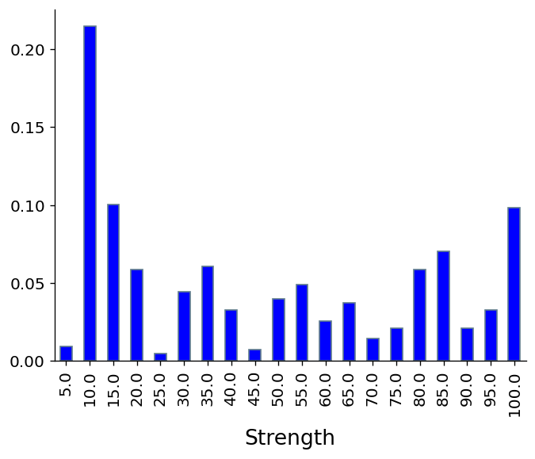
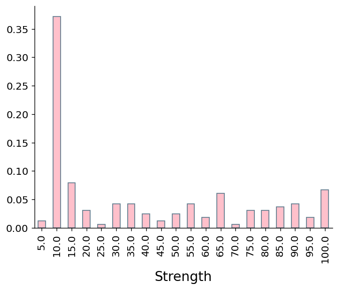
Se si volessero affiancare i due grafici in modo orizzontale (cosa che peraltro
aiuterebbe il confronto) è quindi necessario agire in modo diverso, notando che
plt.subplot restituisce l'oggetto relativo al sistema cartesiano creato e che
le funzioni di matplotlib accettano generalmente un argomento ax a cui
passare il sistema in cui il risultato deve essere inserito.
ax = plt.subplot(1, 2, 1)
male_strength_freq.plot.bar(color='blue', legend=False, ax=ax, figsize=(10, 2))
plt.ylim((0, 0.4))
ax = plt.subplot(1, 2, 2)
female_strength_freq.plot.bar(color='pink', legend=False, ax=ax, figsize=(10, 2))
plt.ylim((0, 0.4))
plt.show()
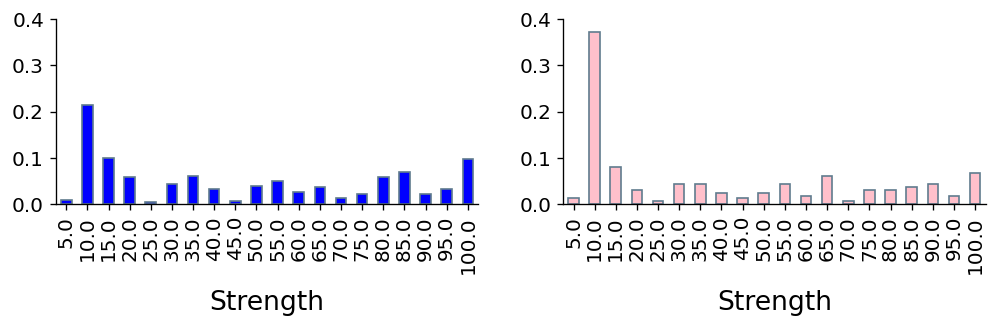
Va notato come nei due grafici a barre siano stati impostati i limiti degli assi delle ascisse a un valore comune: in caso contrario il confronto tra le due immagini sarebbe potuto risultare sfalsato.
Nomenclatura
I più attenti avranno notato che python distingue automaticamente i nomi
formali dei parametri dai corrispondenti valori effettivi, cosa che permette di
scrivere ax=ax nelle precedenti invocazioni di plot.bar.
Infine, metodi come plot restituiscono il riferimento ai sistemi cartesiani
su cui hanno operato: ciò permette di sovrapporre dei grafici anche invocando
metodi il cui comportamento predefinito è quello di creare un nuovo sistema.
ax = male_strength_freq.plot(marker='o', color='blue')
female_strength_freq.plot(marker='o', color='pink', ax=ax, legend=False)
ax.legend(['F', 'M'])
plt.show()
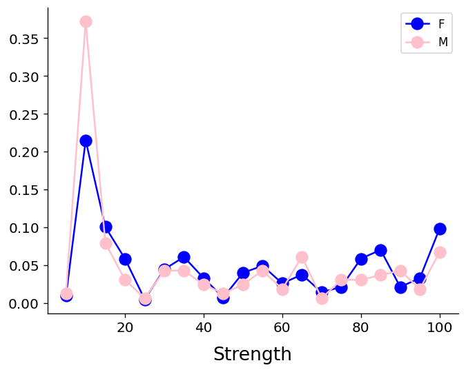
Nomenclatura
Nella cella precedente è stato utilizzando il metodo legend per modificare le
etichette indicate nella legenda.
4.6. I diagrammi stelo-foglia *#
Un diagramma stelo-foglia (o diagramma ramo-foglia, o secondo la terminologia inglese diagramma stem and leaf) si ottiene considerando delle osservazioni a valori numerici, ordinandole e suddividendo ogni osservazione in una parte meno significativa (rappresentata da un numero prefissato di cifre meno significative) e una parte più significativa (rappresentata dalle rimanenti cifre più significative). Le osservazioni aventi la medesima parte più significativa vengono raggruppate in uno stesso stelo, costituito da questa parte significativa seguita da una barra verticale e poi da tutte le parti meno significative (le foglie) separate da virgola. Per esempio il diagramma seguente descrive gli anni di prima apparizione dei primi cinquanta eroi del nostro dataset, dove le foglie sono costruite considerando la cifra meno significativa di ogni anno.
194|1 195|9 196|5, 4, 3, 8, 5, 3, 0, 1, 8, 4, 2 197|9, 2, 5, 7, 2, 7, 5 198|5, 0, 6, 1, 4, 4, 1, 1, 0, 6, 4, 5, 2 199|3, 5, 6, 4 200|8, 7, 1, 5, 4, 5, 5, 4, 3, 4, 1 201|1, 1
Nomenclatura
Il resto di questo paragrafo richiede una discreta conoscenza della programmazione in python, per cui vale la pena tralasciarlo durante una lettura preliminare.
Per non complicarci troppo la vita, assumiamo di avere a disposizione dei dati interi: già così la costruzione di un diagramma stelo-foglie richiede una certa dose di perizia. Innanzitutto è necessario eliminare i valori mancanti dai dati:
x = [s for s in heroes_with_year['First appearance'][:50] if not np.isnan(s)]
È poi necessario indicare il numero di cifre significative che comporranno le
foglie. Memorizziamo nelle variabili d e signif, rispettivamente, tale
numero e la corrispondente potenza di dieci.
significant_digits = 1
signif = 10**significant_digits
Il passo successivo consiste nel costruire tutti i possibili valori per gli
steli. In teoria, il più piccolo di questi valori corrisponde al minimo
elemento considerato a cui va tolta la parte meno significativa. Questa
operazione richiede di convertire l'elemento in un valore intero e poi
dividerlo per la potenza di 10 memorizzata in signif (che equivale a
eliminare le d cifre meno significative).
r = np.arange(int(min(x))/signif, (int(max(x))/signif + 1))
Risulta ora possibile eliminare da r tutti i valori che non rappresentano uno
stelo, che sono quelli in corrispondenza dei quali non vi è alcuna foglia.
start = [s for s in r
if len([e for e in x if s*signif <= e < (s+1)*signif])]
Il diagramma vero e proprio si ottiene costruendo per ogni stelo una coppia contenente il valore dello stelo e una lista di tutte le foglie corrispondenti. Per comodità, convertiremo già le foglie in stringhe, avendo cura di aggiungere eventuali zeri iniziali.
stem = [(s, ['{:0{width}d}'.format(int(i%(s*signif)), width=significant_digits) if s
else str(int(i))
for i in x if signif*s <= i < signif*s+signif])
for s in start]
La visualizzazione del diagramma richiede di convertire in stringa le coppie
generate. Ciò può essere fatto invocando la funzione format su un'opportuna
stringa di formattazione che ci permette di ottenere i vari rami nel formato
richiesto e di inserirli in una lista, per poi concatenare gli elementi di
quest'ultima separandoli tramite un carattere di a capo.
import math
print('\n'.join(list(map(lambda e: '{:>{width}}|{}'.format(e[0],
', '.join(e[1]),
width=int(1+math.log10(max(start)))),
stem))))
194.1|0
195.1|8, 9
196.1|4, 3, 2, 7, 4, 2, 0, 7, 3, 1
197.1|9, 8, 9, 1, 4, 6, 1, 6, 4
198.1|4, 5, 0, 3, 3, 0, 0, 5, 3, 4, 1
199.1|2, 4, 5, 3
200.1|7, 6, 0, 4, 3, 4, 4, 3, 2, 3, 0
201.1|0, 0
Per poter generare velocemente altri diagrammi stelo-foglia, è opportuno riscrivere il codice qui sopra organizzandolo all'interno di una funzione.
def stem_leaf(data, significant_digits=1):
x = [s for s in data if not np.isnan(s)]
signif = 10**significant_digits
r = np.arange(int(min(x))/signif, int(max(x))/signif + 1)
start = [s for s in r if len([e for e in x if s*signif <= e < (s+1)*signif])]
stem = [(s, ['{:0{width}d}'.format(int(i%(s*signif)), width=significant_digits) if s
else str(int(i))
for i in x if signif*s <= i < signif*s+signif])
for s in start]
return '\n'.join(list(map(lambda e: '{:>{width}}|{}'.format(e[0],
', '.join(e[1]),
width=int(1+math.log10(max(start)))),
stem)))
Ciò ci permette, per esempio, di calcolare il diagramma per un numero maggiore di osservazioni.
print(stem_leaf(heroes_with_year['First appearance'][:150]))
193.9|2, 1, 5, 1, 2, 9, 1, 2, 2, 0, 8
194.9|6
195.9|0, 6, 5, 4, 9, 6, 4, 1, 2, 9, 5, 3, 7, 6, 5, 5, 5, 4, 0, 6, 8, 5, 4, 9, 4, 4, 4, 4, 5, 6, 0, 4, 6, 5
196.9|3, 6, 8, 3, 8, 6, 7, 8, 4, 8, 7, 3, 2, 7, 7, 6, 3, 6, 6, 6, 2, 2, 1
197.9|6, 1, 7, 2, 5, 0, 5, 2, 2, 1, 7, 5, 6, 3, 1, 1, 0, 7, 2, 1, 2, 7, 8, 0, 6, 8, 6, 8, 8, 5
198.9|4, 6, 7, 5, 4, 4, 4, 9, 3, 9, 3, 9, 6, 5, 0, 0, 1, 0, 7, 6, 8
199.9|9, 8, 2, 6, 5, 6, 6, 5, 4, 5, 2, 0, 1, 0, 1, 9, 8, 5, 8, 5, 2, 1, 7, 5
200.9|2, 2, 1, 2, 3, 6
Nomenclatura
Il codice sopra prodotto è basato su alcune funzionalità avanzate della
funzione format invocabile sulle stringhe. In particolare, viene formattato
dell'output forzando la conversione da numeri in stringhe in modo da garantire
che il risultato contenga un numero minimo (ma variabile) di caratteri,
aggiungendo ove necessario in un caso degli spazi e in un altro degli zeri. Per
approfondire la tematica della formattazione dell'output si rimanda alla
documentazione ufficiale.